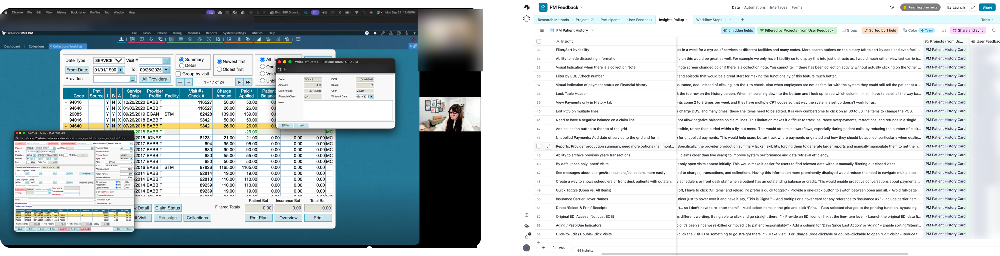

- My role
- Designed and built the knowledge architecture: structure, taxonomy, service maps, and RAG optimization.
- Sources
- Discovery sessions across nine client practices, Pendo behavioral data, Aha! customer feedback, and role and workflow documentation.
- Constraints
- Research was stored for the people who created it, spread across the organization, with no way to see what was missing.
- Shipped
- A queryable research library, cross-product service maps, and a register of known gaps.
01 — The Problem
Teams couldn’t find
existing research
The organization had accumulated a lot of UX research: discovery sessions, Pendo behavioral data, Aha! feedback, role definitions, and workflow documentation.
That research was stored in ways that made it hard to retrieve, so teams starting new research often couldn’t find what had already been learned.
Teams repeated research that already existed, and no one could see where the gaps were.
My role: I designed and built the research knowledge architecture — structure, taxonomy, service maps, and RAG optimization — so teams could retrieve existing knowledge, identify gaps, and understand workflows across the ecosystem.
02 — Before → After
Before and after
the research library
| Before | After | |
|---|---|---|
| Research retrieval | Finding past research meant knowing the right person to ask or where to search manually. | Structured for AI-assisted retrieval — query the library and surface relevant sessions, personas, workflows, and findings. |
| Behavioral data | Pendo data existed, but it wasn’t connected to qualitative research. | Behavioral data is tagged and linked to the related discovery sessions and workflow documentation. |
| Cross-product understanding | Understanding how a workflow spanned PM and EHR depended on knowing who to ask. | Service maps document workflows across PM, EHR, billing, and scheduling, with known gaps flagged. |
| Research gaps | Unknown until a project needed something that didn’t exist. | Surfaced up front — the library shows what’s documented and what’s missing before a project starts. |
| New research planning | Started from scratch, or from memory. | Starts from the existing knowledge base, so new sessions extend what’s known instead of re-covering it. |

03 — Key Decisions
Built for people
who weren’t in the original sessions
Optimized for retrieval, not storage
Most research repositories are organized for the person who created them. This one is organized for someone who wasn’t in the room.
Connected the what and the why
Pendo shows what users do. Discovery sessions explain why. The library links the two.
Service maps as connective tissue
Individual artifacts are useful on their own. Service maps show where PM, EHR, billing, and scheduling workflows intersect, so cross-product decisions are informed instead of assumed.
Claude for synthesis, sources for truth
I used Claude to analyze and synthesize large bodies of existing research, then validated every finding against the source material.
Gaps as a feature
Knowing what you don’t know is as valuable as knowing what you do. The library calls out undocumented areas explicitly.
Where I had to correct the model
Early on, I built a skill to turn client discovery sessions into friction maps. The model kept blurring the columns. It mixed up friction with goals, customer outcomes with business impact, and feature ideas with KPIs, and it was too wordy. It took several rounds of discovery sessions and corrections to lock in a precise definition for each column. Once those were set, it distilled the sessions correctly.
I want it to extrapolate only the obvious. If the friction is that a task takes the front desk too long, the impact is time saved and the KPI is reduced time on task. Beyond that, the skill tells it not to infer, because once it fills a cell you can’t tell what it heard from what it guessed. The model doesn’t like leaving a cell empty, but an empty cell is useful: it shows us exactly what we still need to learn.
The patient journey service map
The master map follows a patient from acquisition to reporting. Each stage pulls together pain points, KPIs, and desired states from discovery sessions across nine client practices — and the stages without research are called out, not hidden.
- Held claims need a manual touch even when the fix is fully predictable
- The rule builder can’t express compound conditions
- Credentialing exceptions only work payer by payer
- No bulk configuration or copying rules across states
- Errors are caught after charge entry instead of before
Compound rule logic, rules that correct and release claims automatically, bulk import, and validation at charge entry.
Inside the library
Every artifact lives in one of six connected collections, structured so a question can pull from several at once.
Interview transcripts and synthesized findings, organized by role and workflow.
Pendo usage by page, role, and segment — linked back to the sessions that explain it.
Aha! ideas and recurring feedback themes, tagged to product areas.
Role definitions and responsibilities across PM and EHR.
Cross-product workflows with pain points, desired states, and KPIs.
What isn’t documented yet — flagged before a project starts.
04 — Outcomes
What the library
delivered
A queryable library
Research structured and searchable across product domains.
Cross-product service maps
Completed for core workflows across PM, EHR, billing, and scheduling.
Behavior linked to context
The discovery session backlog is connected to Pendo behavioral data.
Gaps made visible
Missing product knowledge documented for the first time, as a deliberate artifact.